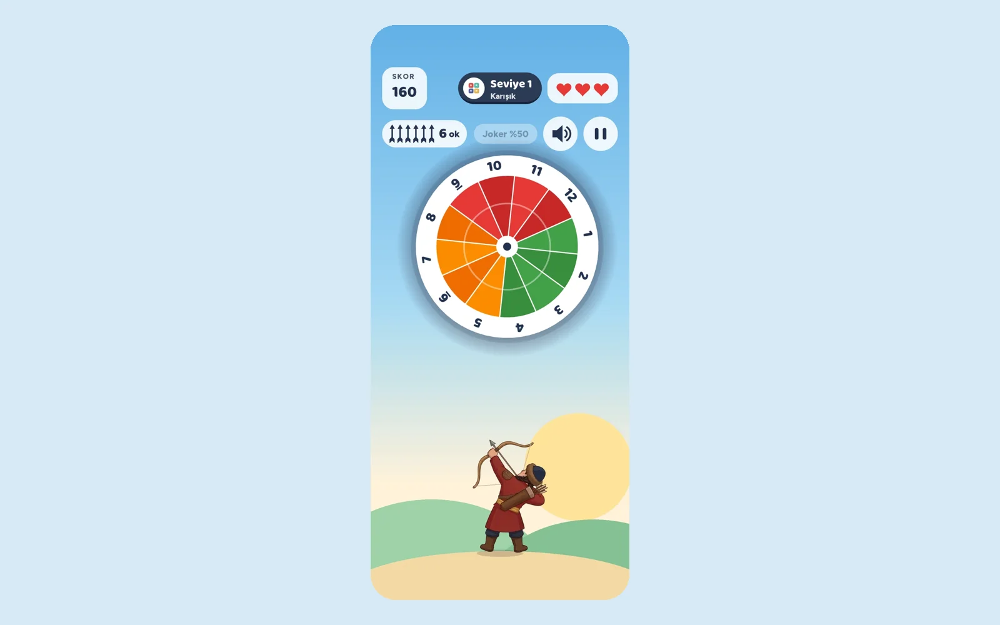
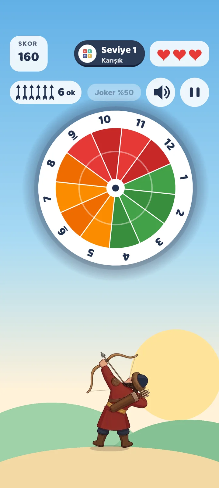
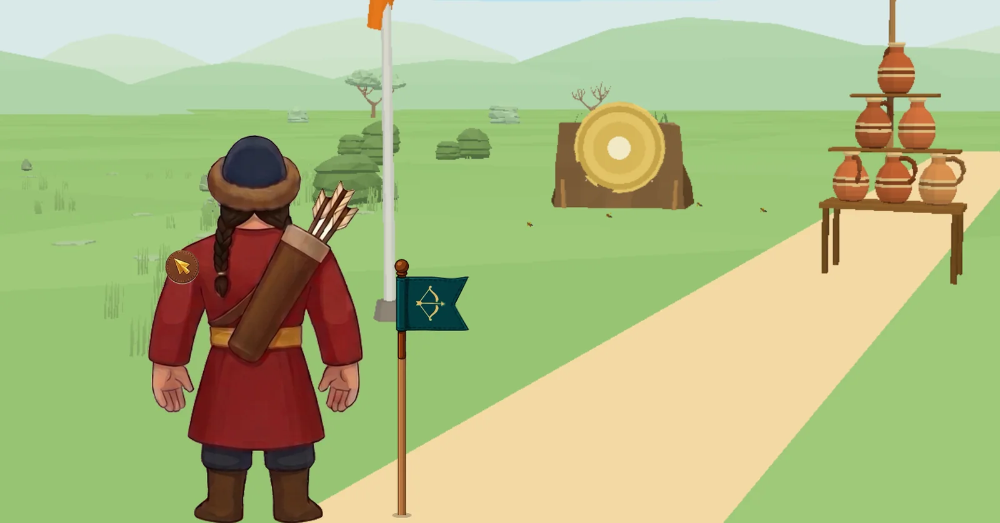
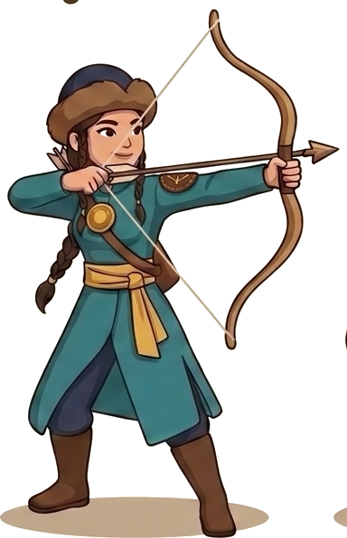
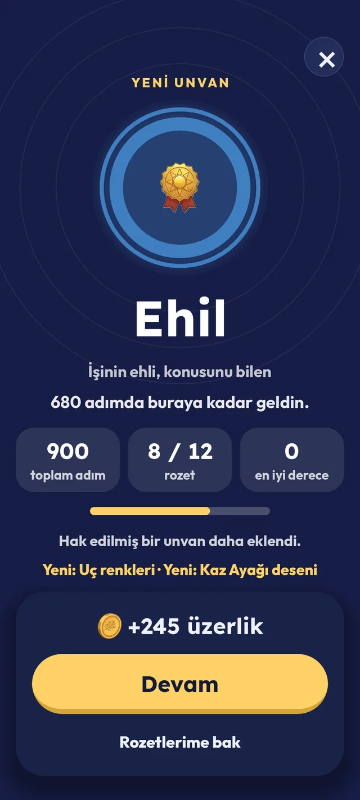
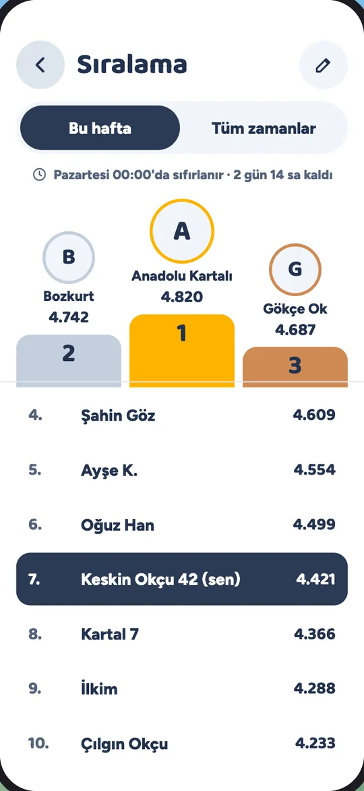

Bilgi yarışı
Bil At
8 alan, 1.400'den fazla soru. Hepsi Türkçe. Alanını seç ya da karışık oyna.
- Genel Kültür
- Tarih
- Coğrafya
- Bilim
- Sinema ve Dizi
- Dil ve Deyimler
- Spor
- Yemek ve Mutfak
Bil At! bir bilgi yarışması ve okçuluk oyunu. Dönen tahtaya ok atarsın, vurduğun dilim sorunun zorluğunu seçer. Bil, puanı kap, yüksel.


Parmağını yay gibi geri çek, bırak. Ok dönen tahtaya uçar. Tahtada 1'den 12'ye sayılar var.
1-4 arası dilim kolay soru getirir. 5-8 arası orta, 9-12 arası zor soru.
Zor dilimi vurmak cesaret ister ama puanı büyüktür. Kolay dilim güvenli, zor dilim kazançlı.
8 alan, 1.400'den fazla soru. Hepsi Türkçe. Alanını seç ya da karışık oyna.
Ana menüde ikinci bir mod daha var. Ok Meydanı'nda soru yok, sadece okçuluk. Bozkırda yayını gerersin, rüzgârı okursun, nefesini tutarsın.

Ok Meydanı'nın hikâyesini Türk okçuluğu ve Ok Meydanı sayfasında oku.
Okçunu Profil'den seç. Alp kırmızı kaftanlı yiğit bir okçu, Banu turkuaz kaftanlı çevik bir okçu.

Jokerler, unvanlar ve internetsiz oyun. Ayrıntı için başlığa dokun.
İki yol, ikisinde de 12 unvan. Bilgi Yolu'nda her doğru cevap, Okçuluk Yolu'nda Ok Meydanı'ndaki her isabet 1 adım. Meraklı'dan Bilge'ye, Hevesli'den Efsane'ye yükselirsin. Her yeni unvanda rozet ve üzerlik ödülün gelir.

Hesap açmana gerek yok. Oyunla gelen sorular cihazında durur, uçakta ya da yolda internetsiz oynarsın. Çevrimdışı aldığın skor, bağlantı gelince haftalık sıralamaya gider.

Ayrıntılar için ana sayfaya bak.
Dönen hedef tahtasına ok atarsın. Okun vurduğu sayı sorunun zorluğunu seçer: 1-4 kolay, 5-8 orta, 9-12 zor. Her soruda 20 saniye ve dört şık var.
Evet. Oyunla gelen sorular cihazında durur, internet olmadan oynarsın. Çevrimdışıyken aldığın skor, bağlantı gelince sıralamaya gönderilir.
Şimdilik yok, Bil At! tek kişilik oynanır. Haftalık sıralama pazartesi 00:00'da sıfırlanır, arkadaşlarınla puanda yarışırsın.
Hayır. Ok Meydanı 3D okçuluk modudur: soru yok, bozkırda hedefleri vurursun. İnternetsiz oynanır.
Evet. Oyun ücretsizdir ve reklamlarla desteklenir. Uygulama içi satın alma yoktur. Reklamı yalnızca sen seçince izlersin.
Hayır. Ayrı hesap açmazsın. Sıralama için bir takma ad seçmen yeter.
Her soruda 20 saniye ve dört şık var. Oyun, 3 canın bitene kadar sürer; yanlış cevap ya da biten süre bir can götürür. Her 3 doğruda seviye atlarsın.
Parmağını ekranda yay gibi geriye çekip bırakırsın, ok ters yöne uçar. Ne kadar çekersen o kadar güçlü atarsın. Tahta döner, biraz önden nişan alırsın. Sadağında 6 ok var; ıskalarsan bir ok gider.
Bil At! tek kişilik oynanır. Arkadaşlarınla haftalık sıralamada yarışırsın.
Evet. İnternet varken yeni sorular indirilir, indirdiğin sorular cihazında kalır ve internetsiz de oynanır.
Android'de Google Play'den, iPhone'da App Store'dan indirilir. Hesap açmak gerekmez.
Bilgi yarışması ve 3D okçuluk tek oyunda. Hesap gerekmez, internetsiz de oynanır.